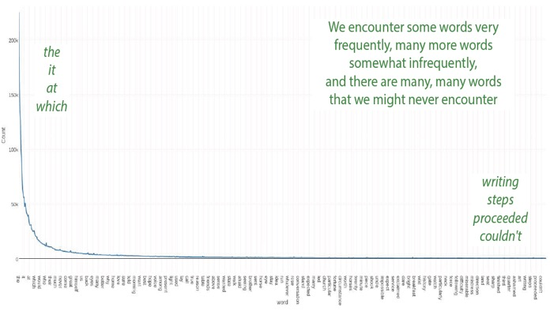
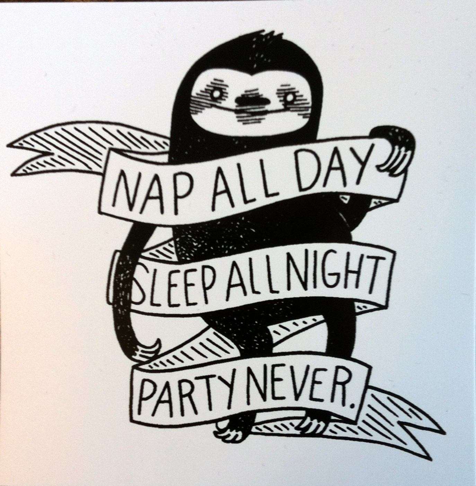

<img class="wide" src="ling_memes/wugs_not_drugs.jpg"> --- ### Questions from last time? - Analytical techniques don't have to be cognitively real to be useful! --- # Frequency and Morphology! ### Dr. Will Styler - LIGN 120 --- ### We've talked about two views on the lexicon - **Morpheme-based Lexicon:** We're storing chunks of words and recombining them at the time of speech - **Word-based Lexicon:** We're storing words as chunks, and breaking them apart when we need to --- ### Today, we'll look at something that's closely related to that debate! --- ### Today's Plan - What is frequency? - Frequency and Basic Forms - Frequency and Productivity - Frequency and Morphological Marking - Frequency and Oddity --- # What is Frequency? --- ### Not all words are used with the same frequency - We use 'to be' much more than 'to defenestrate' - (I hope!) - We talk about plural cars more often than plural octopodes - These distributions are really unequal! --- ### Zipf's Law - "In a given corpus of natural language, the frequency of a word is inversely proportional to its rank in the frequency table" - *The most common words are **really** common!* - ... and the rarest words are super rare ---  --- ### We find frequency through observation - "How often does a word occur in natural language?" - This is often checked using text corpora --- ## Text Corpus A large body of natural language text collected for linguistic inquiry --- ### Corpora have a bunch of language data - Brown corpus: One million words - [EnronSent Corpus](http://wstyler.ucsd.edu/enronsent.html): 14 million words - [OpenANC Corpus](http://www.anc.org/): 15 million words (annotated) - NY Times corpus: 1.8 million articles - [Corpus of Contemporary American English (COCA)](https://corpus.byu.edu/coca/): 560 million words - iWeb Corpus: 14 *billion* words --- ### We can use a corpus to check frequency! - [COCA Frequency](https://corpus.byu.edu/coca/) of 'are': 2,567,146 tokens - 'walk': 67,178 tokens - 'walked': 58,702 tokens - 'scratch': 6,020 tokens - 'cray': 347 tokens - 'chamfer': 33 tokens - 'yeet': 0 tokens --- ### Corpus frequency should have some relation to usage frequency - Words that almost never show up in large amounts of text are probably quite rare - ... or the text isn't representative (c.f. yeet) - We can **calculate and quantify** the relative frequency of words --- <img class="wide" src="humorimg/coolstoryhouse.jpg"> --- ### Why does frequency matter for morphology? --- # Frequency and Basic Forms --- ## What's the most basic form of a word? --- ### Deriving 'basic' from structure - We've been making an assumption: More morphology makes it 'less basic' - 'cat' is basic, 'cats' is derived - 'govern' is basic, 'government' is derived - 'equal' is basic, 'unequalled' is derived --- ### We can think of this as a structure-based view - **The base form is the simplest form observed!** - Modifications to the simplest morphological form result in a derived form! --- ### This doesn't have to be true! - Some kinds of words *never* surface without additional morphology - Think Spanish verbal morphology, which is *obligatory* - Some words are seldom found without additional morphology - 'couth' - Remember, we might be storing whole words - All forms are equivalent in complexity then! --- ### Deriving 'basic' from frequency - Another approach: **The most frequent form is the most basic form!** - This is *regardless of form!* - Govern (3,856) vs. <clg>Government (240,841)</clg> - Settle (13,201) vs. <clg>Settlement (16,394)</clg> - <clg>Enhance (11,672)</clg> vs. Enhancement (2,548) --- ### These two approaches make different predictions - 'Govern' is the basic form in a *structure-based* approach - 'Government' is the basic form in a *frequency-based* approach --- ### Frequency seems to play a role in the lexicon - The most frequent words are easier and faster to access - We preferentially hear frequent words in ambiguous situations - We learn more frequent forms more easily - Common use makes for stronger mental representation! - **Frequency is a reasonable way to think about 'basicness'** --- ... but does frequency win us anything else? --- # Frequency and Productivity --- ## Why are some patterns productive? --- ### plemkal - 'walked' - glentap - 'cried' - klampe - 'sung' - flutap - 'yelled' - slapte - 'grabbed' - vlagre - 'wakened' --- <section data-background-color=#708cef></section> ### If 'hug' is 'beemte', the word for 'hugged' is... A) beemtap B) breemte C) bleemte D) veemte E) wugiz --- ### Gar - 'cat' Garfalb - 'catty' - Bar - 'noodle' Barfalb - 'noodly' - Ger - 'rock' Gerfalb - 'rocky' - Fes - 'sponge' Fesfalb - 'spongey' - Fest - 'party' Festfalb - 'party-like' - Ren - 'knight' Renfalb - 'knight-like' --- <section data-background-color=#708cef></section> ### If 'dog' is 'rup', the word for 'dog-like' is.... A) Ruplen B) Ruplab C) Rupfalb D) Rupples E) Rupopodes --- ### We need to see examples of the pattern in action to use it - Morphological patterns must be 'seen' to be used! --- ### Lexicalization is when we stop 'seeing' the pattern - 'oxen', 'children', 'brethren', 'women' - Speakers no longer recognize '-en' as a plural marker - Words that are never seen die off! --- ### "Do speakers have to see the pattern with a certain frequency for it to stay productive?" - # Yes! --- ### The 'parsing line' - The base form needs to be common enough that speakers 'see' the pattern - Hay and Baayen (2002) describe one way to calculate this --- ### Put simply... - When the majority of words participating in a morphological pattern are **more frequent** than their bases, then that morphological pattern is *not likely to be productive* - When the majority of words participating in a morphological pattern are **less frequent** than their bases, then that morphological pattern is *likely to be productive* - This is referred to as the **parsing ratio** --- ### Parsing Ratio for '-ity' - Modern/Modernity, Secure/Security, Insane/Insanity - 17% of complex words containing ity are *less frequent than their bases* - 83% of complex words containing ity are *more frequent* than their bases - -ity has a **parsing ratio** of 0.17 - The complex form (with -ity) is more basic! --- ### Parsing Ratios - -ity has a parsing ratio of 0.17 - -ment has a parsing ratio of 0.24 - -ery has a parsing ratio of 0.34 - -er has a parsing ratio of 0.5 - -like has a parsing ratio of 0.68 - -less has a parsing ratio of 0.86 --- ### This isn't a perfect measure, but it does help! - It shows us why we 'see' some affixes in the pile more than others - It gives us a way to quantify how 'easy to parse' a new word would be - This was a *big* element of the 'productive vs. creative' discussion! - It helps us understand affix (and word!) lexicalization! --- ### What else does Frequency help us with? --- # Frequency and Marking --- ## How often do we use word forms? --- ### Your book has a great discussion of frequency asymmetries! - You did the reading, right? --- ### How often do we use different word forms? - Singulars happen more often than plurals - For most nouns! - Subjects happen more often than Objects - Every sentence has a subject - 3rd Person Singular forms are *really* common --- This combines with another fundamental truth of human language - # We are lazy as heck ---  --- ### We see phonological reduction in frequent words - Memories vs. Mammaries - Artillery in and out of the military - **This is really neat!** --- ### Frequent inflectional forms are less likely to be morphologically marked! - Singulars happen more often than plurals - <danger>So let's mark plurals!</danger> - Subjects happen more often than Objects - <danger>So let's mark accusative/ergative!</danger> - 3rd Person Singular forms are *really* common - <danger>Zero all the morphemes!</danger> - This is a general pattern... --- ### Less frequent forms are longer and more complex! - We see more zero-marking in frequent forms - We see shorter forms for more frequent inflections - It's not universal, but it's common! --- ### Frequent meanings are also expressed more clearly - We see less *syncretism* in frequent forms - Where multiple inflectional meanings have the same form - Frequent meanings are more *differentiated* - Marking tends to be more specific for frequent cells! --- ### Which brings us to the last topic... --- # Frequency and Oddity --- <section data-background-color=#708cef></sec<section data-background-color=#708cef></sec<section data-background-color=#708cef></section> ### What's the past tense form of 'sing'? A) sing B) sang C) sung D) singed E) I have no idea --- <section data-background-color=#708cef></sec<section data-background-color=#708cef></sec<section data-background-color=#708cef></section> ### What's the past tense form of 'ping'? A) ping B) pung C) pang D) pinged E) I have no idea --- ### Frequent words are more readily able to be irregular! - Across languages, verbs like 'be', 'do', 'go', 'come', and 'say' are most likely to have irregular morphology - English 'to be' has 'am, is, are, was, were, be, being, been' - Spanish 'ser' ('to be') has se-, fu-, es- allomorphs --- --- ### Irregular forms need to be memorized! - ... and that can only happen when they're regularly encountered - If speakers rarely encounter an unusual form, the irregular form won't persist - Children will naturally regularize unusual patterns - (unless we correct them out of it!) - **Frequency can protect words from analogical change!** - ... and can cement their forms! --- The can was yaughten down the hallway. The can was yaughten down the hallway. The can was yaughten down the hallway. The can was yaughten down the hallway. The can was yaughten down the hallway. The can was yaughten down the hallway. The can was yaughten down the hallway. The can was yaughten down the hallway. The can was yaughten down the hallway. The can was yaughten down the hallway. The can was yaughten down the hallway. The can was yaughten down the hallway. The can was yaughten down the hallway. The can was yaughten down the hallway. The can was yaughten down the hallway. The can was yaughten down the hallway. The can was yaughten down the hallway. The can was yaughten down the hallway. The can was yaughten down the hallway. The can was yaughten down the hallway. The can was yaughten down the hallway. The can was yaughten down the hallway. The can was yaughten down the hallway. The can was yaughten down the hallway. The can was yaughten down the hallway. The can was yaughten down the hallway. The can was yaughten down the hallway. The can was yaughten down the hallway. The can was yaughten down the hallway. The can was yaughten down the hallway. The can was yaughten down the hallway. The can was yaughten down the hallway. The can was yaughten down the hallway. The can was yaughten down the hallway. The can was yaughten down the hallway. The can was yaughten down the hallway. The can was yaughten down the hallway. The can was yaughten down the hallway. The can was yaughten down the hallway. The can was yaughten down the hallway. The can was yaughten down the hallway. The can was yaughten down the hallway. The can was yaughten down the hallway. The can was yaughten down the hallway. --- ### More frequent forms replace (or level) less frequent ones - If we don't see a word often, we'll assume it works 'like the other words' - Strange characteristics become less strange - **Rare and weird words get unweirded!** --- ### So, Frequency is helpful in Morphology! - It lets us quantify word usage in practice - It helps us find basic forms - It helps us understand productivity - It helps us understand why we mark the things we do - ... and it keeps words short and irregular --- ### Amber will talk more about frequency in her talk on June 7th! - It's going to be awesome --- ### For Next Time - We'll talk about weirdly-shaped words, then wrap up the lexicon! --- <huge>Thank you!</huge>